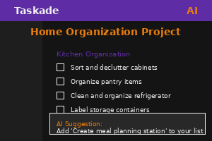
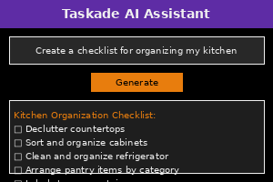

0% Complete
Day 4: AI Productivity with Taskade
Introduction to AI-Powered Productivity
Welcome to Day 4 of "AI Made Simple"! Today, you'll discover how to boost your productivity using Taskade, a free AI-powered workspace that helps you organize tasks, take notes, and collaborate with others.

Taskade allows you to:
- Create to-do lists, notes, and project outlines
- Use AI to generate content and ideas
- Organize your work with templates
- Collaborate with others in real-time
Beginner Activity: Create an AI-Powered To-Do List
Let's use Taskade's AI features to help organize your tasks:
- Visit Taskade.com and create a free account
- Create a new project and select "List" as the format
- Click on the AI button (usually looks like a magic wand or robot icon)
- Try a prompt like: "Create a weekly meal planning checklist"
- Watch as the AI generates a complete meal planning template
- Customize the generated list to fit your needs

Tips for effective AI prompts in Taskade:
- Be specific about what type of list or content you need
- Include details about categories or sections you want
- Mention the purpose or goal of your list
Bonus Task: Create a Personal Development Plan
Let's use Taskade's AI to help with personal growth:
- Create a new project in Taskade
- Use the AI assistant with a prompt like: "Create a 30-day personal development plan for improving [skill you want to develop]"
- Review the generated plan and customize it to your schedule and preferences
- Set due dates for each task to keep yourself accountable
This exercise shows how AI can help structure learning and personal development in a way that's tailored to your needs.
Reflection Question
Take a moment to consider this question:
"What areas of your work or personal life feel the most disorganized or overwhelming? How might AI-powered tools help bring structure to these areas?"
This reflection helps you identify specific productivity challenges where AI can provide the most value.